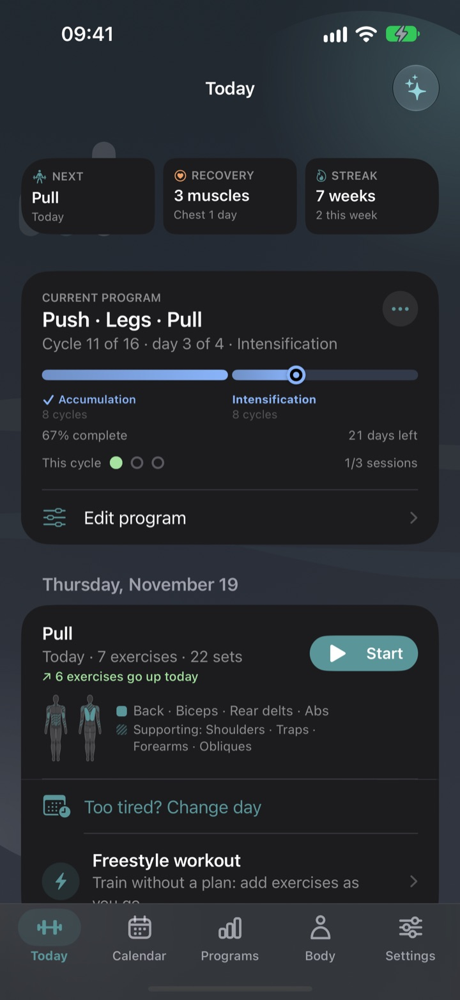
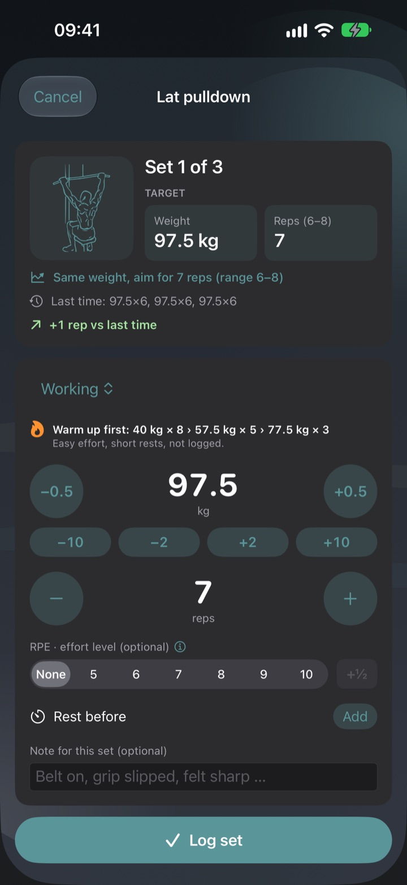
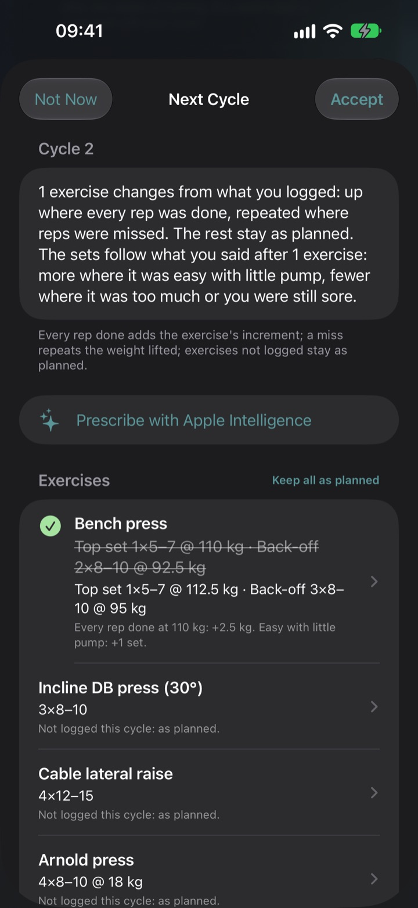
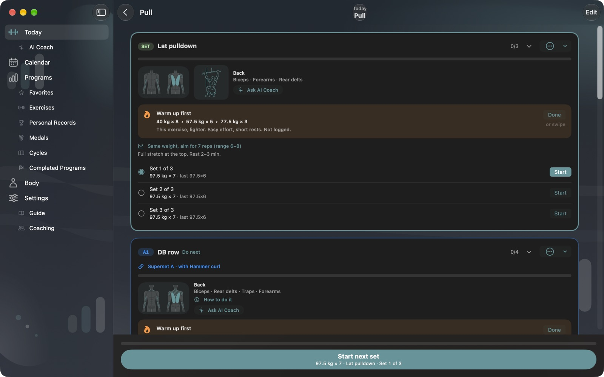

Training methods
Progressive overload: the one rule behind every program
Muscles and strength grow when the work asks a little more of them than they're used to, and stop when it doesn't. Every program on this blog is a different way of asking for that little more.
What it means
Training is a signal. A set that's hard enough tells the body that what it has isn't quite enough, and while you recover it builds a little more: stronger muscles, a nervous system that's better at using them, tendons that take more load. Next time, the same set is easier. That's the good news and the catch: once the work is easy, the signal is gone, and so is the reason to change.
Progressive overload is the answer: make the work a little harder over time, so there's always a reason to adapt. "A little" is the important part. Too much, and you can't recover from it before the next session; too little, and nothing happens. Programs exist to get the dose right, workout after workout, for months.
The ways to add
Adding weight is the obvious way, but it's one of several:
- More weight for the same sets and reps. The clearest signal, and the way strength programs move. See linear progression.
- More reps with the same weight, until you're at the top of a range, then more weight. That's double progression, the usual way for muscle growth.
- More sets for a muscle across the week. Volume drives growth up to a point; the trick is adding it only where a muscle can use it. See effective sets.
- Harder sets: the same weight and reps with fewer reps left in reserve, or an intensity technique like a drop set at the end.
- Better reps: deeper, slower or stricter. These count, though no number shows them, which is why TrainingPlanner asks whether a weaker set was weaker or stricter.
A program picks one or two of these and applies them on a schedule. A beginner can add weight almost every workout; an advanced lifter adds it over weeks, in waves, and needs planned deloads to keep going.
How you know it's working
Compare like with like. A set of 100 kg for 5 against last week's 97.5 kg for 5 is clearly better. But 102.5 kg for 4 against 100 kg for 6? For that, a one-rep max is estimated from each set (Epley's formula: the weight times one plus the reps divided by thirty), and the higher estimate wins. 100 kg for 6 comes out at 120 kg, 102.5 kg for 4 at about 116 kg: the heavier set was a step back.
Over weeks, look at the trend rather than single sets. A bad night's sleep costs a few percent; a program that works shows up as estimated maxes and reps that keep climbing from one cycle to the next.
How TrainingPlanner keeps track
You don't have to remember last week. In a workout, every set starts from what you did last time, and shows how this one compares: "+2.5 kg vs last time", "+1 rep vs last time", or "Same as last time". Before you open a session, Today says how many of its exercises go up. A set that beats your best weight, estimated max, reps at a weight or hold time is marked with a trophy as you log it.
- Start today's session from Today. Each exercise lists its sets with the weights and reps they start from.
- Tap Start next set as you begin a set: the sheet shows the weight and reps, last time's set, and the change.
- Adjust with the buttons if you did more or less, and tap Log set. The rest timer starts by itself.



At the end of a cycle, the app writes the next one from what you logged. Where you got every rep, the target goes up; where you missed, it stays. Each change comes with its reason, and nothing changes until you accept it: tick off what you want, or keep the plan as it was. How each exercise moves is its progression model: linear, double progression, RPE-based, or as planned for programs that work in percentages.

Free or Pro. Every set starting from last time, the comparison and the records are in the free app. The next cycle written for you, and the weights moved by a progression model, are part of TrainingPlanner Pro.
When progress stalls
Every program stops working eventually; that's what the next program is for. Before you change it, check the usual suspects: sleep, food, stress, and whether the last weeks were actually harder than the ones before. If you log how hard your sets were, TrainingPlanner watches for the pattern that means you need rest rather than more effort: effort climbing for two cycles running while the lifts fall back. Then Today suggests a deload, and can make the next cycle one.
And if the plan is fine but stale, move on. Beginners get the most from simple linear programs; after a year or so, progress comes in weekly or monthly waves, which is what periodization is for.